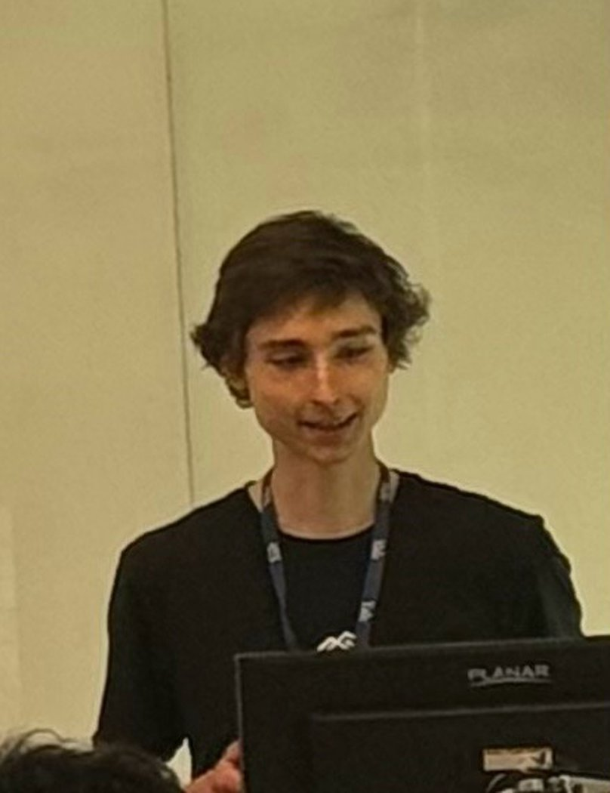

Field: industrial organization. I want to develop empirical methods for scholars across fields of applied microeconomics whose research uses economic models as a foundation for empirical work. My own tools are those of empirical IO — demand, production, and the measurement of market power. They were built to study particular industries, but the questions they answer now belong as much to the economics of education, health care, taxation, development, and the environment.
My work to date studies how market power interacts with public policy: my master's thesis measured markups among firms selling to the government in public procurement, combining production-function markup estimation with modern causal-inference methods on administrative microdata. It received the Czech Economic Society's Young Economist of the Year Award (first place, 2025).
At Yale I work as a research assistant to Professors Seth Zimmerman and Barbara Biasi and take PhD coursework in empirical industrial organization and econometrics. Before coming to New Haven, I earned an M.Sc. in Economics from the Stockholm School of Economics and a B.Sc. in Economic Theory from Charles University, and held research assistant positions at the Institute for International Economic Studies (IIES), Stockholm University, and at CERGE-EI in Prague.
News
- June 2026 — Presented "Markups and Public Procurement" at the Pre-Doctoral Economics Conference at Yale; attended the Cowles Models & Measurement and Econometrics conferences
- November 2025 — First place, 32nd Young Economist of the Year Award, Czech Economic Society (announcement, award presentation)
- August 2025 — Young economist participant, 8th Lindau Nobel Laureate Meeting in Economic Sciences
- July 2025 — Joined the Tobin Center for Economic Policy at Yale as a Predoctoral Fellow
Contact: marek.chadim at yale dot edu · 87 Trumbull Street, New Haven, CT